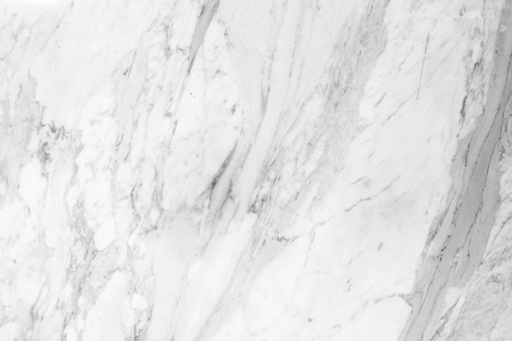
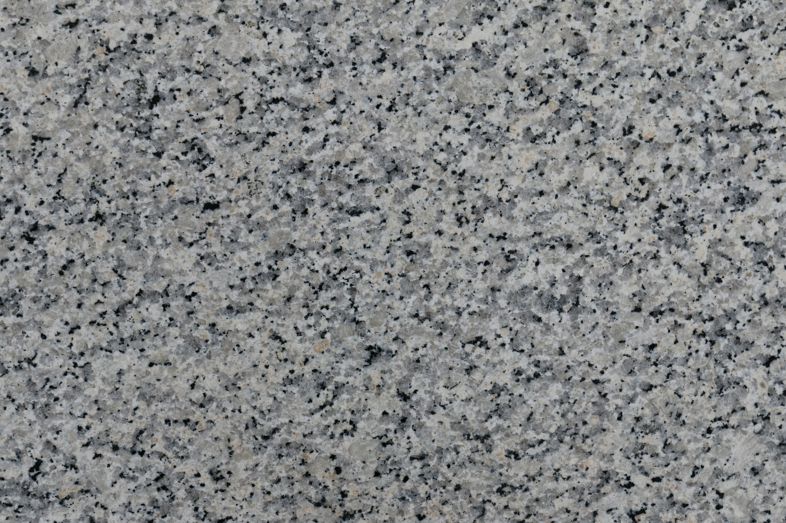
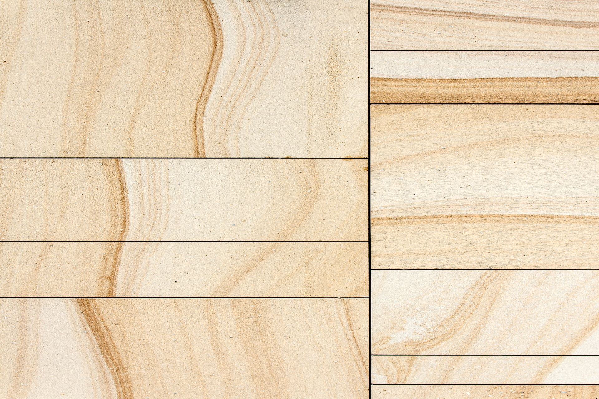

by Thomas McAllister
Marble |
Granite |
Limestone |
|---|---|---|
|  |  |  |
|
|
|
| Geographic locations for Marble was explained best by Natural Stone Online. They state "Marble quarries occur across Turkey, Greece and the US, but the most famous and treasured source is southern Italy". | Geographic locations for granite as pointed out by Granitemarblewa are "Traditionally, Italy, USA, and Canada are very popular sources of granite, but China, India, and several locations in Africa and South America are big suppliers of granite to the rest of the world." | Geographic locations for limestone WorldAtlas explains are "China, the US, Russia, Japan, India, Brazil, Germany, Mexico, and Italy are some of the world's largest limestone prouducers today. Some of the biggest quarries in the world, however, are in the U.S. state of Michigan, specifically near the Great Lakes' coastlines." |